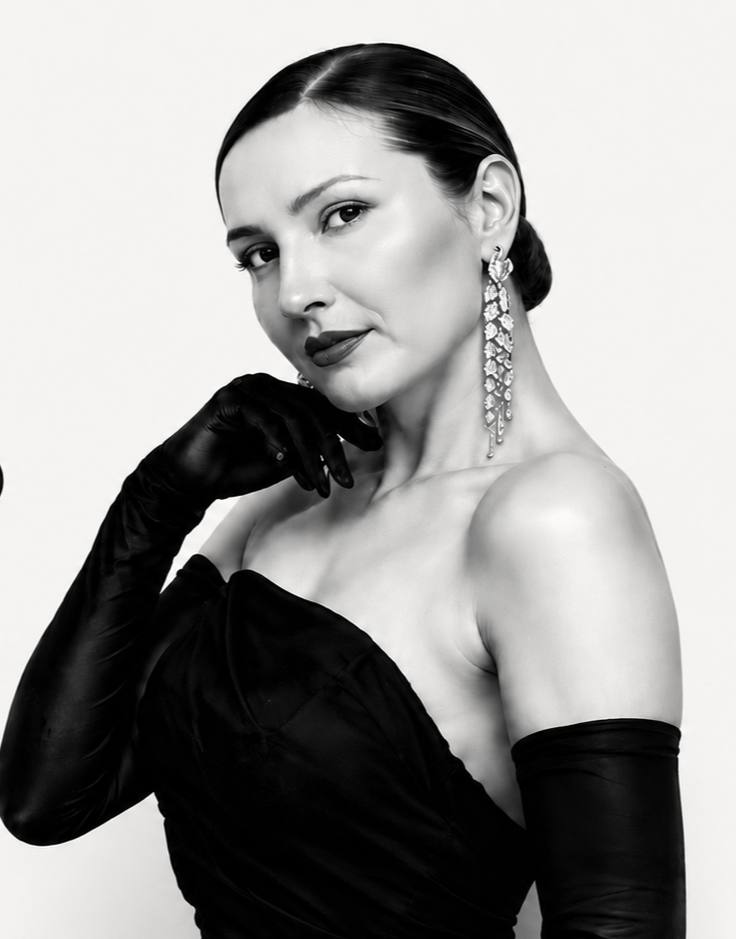

Слышу
Интервью, характер и важные детали.
Я ВЕДУ
события,
которые помнят
Я СОЗДАЮ АТМОСФЕРУ,
В КОТОРОЙ КАЖДЫЙ
ЧУВСТВУЕТ СЕБЯ ВАЖНЫМ
с любовью к людям и деталям

01 / Знакомство
Я не просто веду праздник. Я помогаю ему стать вашей историей.
Я ведущая и режиссёр событий из Сургута. Я быстро чувствую людей, слышу между строк и превращаю детали вашей истории в живой сценарий — с юмором, ритмом и моментами, которые хочется вспоминать.
Я работаю со свадьбами, юбилеями, корпоративными и медийными событиями в России и за рубежом. В моих программах — авторская драматургия, церемонии, интервью с героями, интерактивы, ИИ-игры и живой вокал.
Мне доверяют, когда нужен не «человек с микрофоном», а партнёр по атмосфере: внимательный к конфиденциальности, точный в тайминге и достаточно смелый для импровизации.
У каждого события
должен быть свой голос
02 / Авторский метод
От первого разговора до финального аккорда — в фокусе люди, ритм и эмоции.
Интервью, характер и важные детали.
Идея, сценарий и личные смыслы.
Ритм, церемония и живой диалог.
Контент, который останется после вечера.
03 / Отзывы
Не постановочные цитаты. Настоящие сообщения людей, которые доверили мне свой день.
«Всё было продумано до мелочей. Вы погрузились в этот непростой проект на все 100500 — время летело незаметно, всем всё понравилось. Ещё трое коллег попросили ваш номер».
Имена и детали переписки не публикуются отдельно. Оригиналы отзывов — в презентации Марии.
Опыт крупных проектов
Вела события для сотрудников и подразделений
04 / Форматы
Цены «от» действуют для частных событий в Сургуте. Выездные, корпоративные, медийные и зарубежные проекты рассчитываются индивидуально.
Точное, живое ведение без универсальных шаблонов.
Событие с персональной драматургией и собственной интонацией.
Полноценная режиссура события и материалы, созданные только для его героев.
Дорога, проживание и дополнительный продакшн рассчитываются отдельно. Для крупных площадок и выездных проектов составляется технический райдер.
05 / Дневник
Подготовка и поездки. Личные мысли и профессиональные ошибки. Решения, которые рождаются ночью, и моменты, которые невозможно запланировать.
#наСайтмару
06 / Свободна ли дата?
Напишите или позвоните Марии, чтобы обсудить дату и замысел события лично.
Каждое знакомство начинается с разговора.
Позвонить Марии